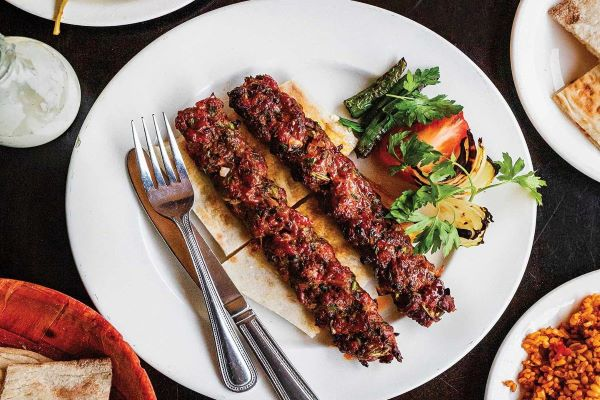

Turkish Kebab
Turkish Adana kebab is one of the most famous Turkish delicious foods around the world, despite the large number of foods prepared from meat in Turkish cuisine, but the Adana kebab is the most famous among all Turkish varieties. it consists of long, hand-minced meat kebab mounted on a wide iron skewer and grilled on an open mangal filled with burning charcoal. 